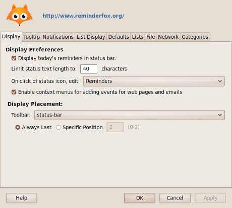
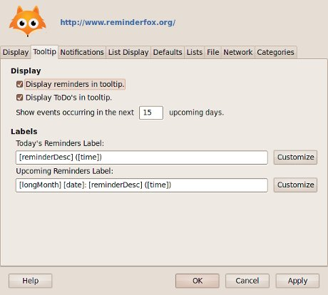
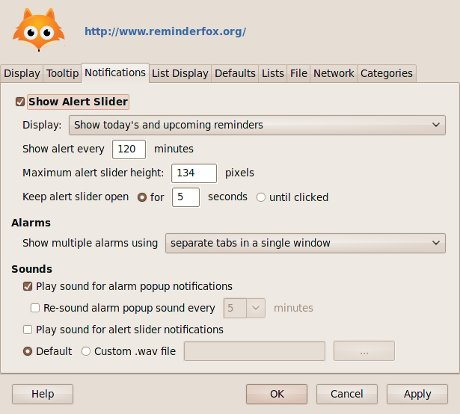
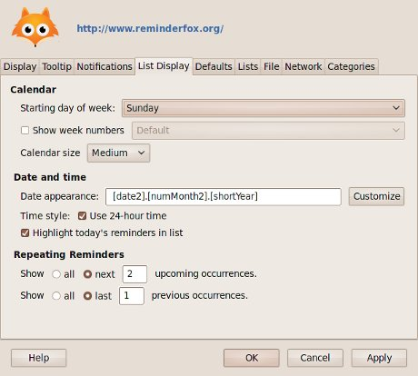
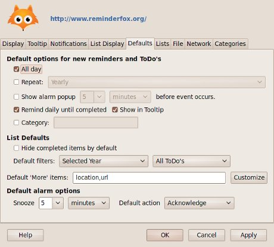
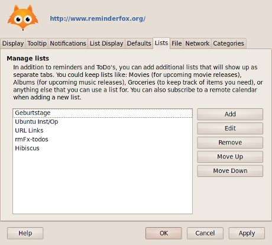
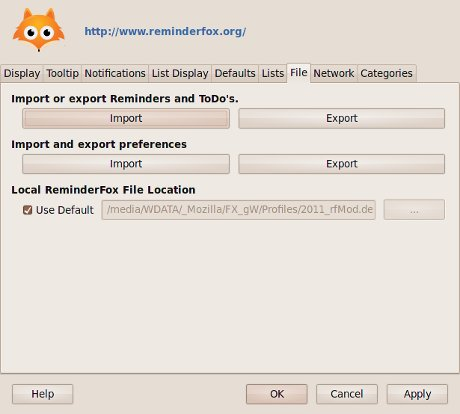
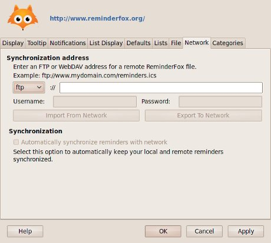
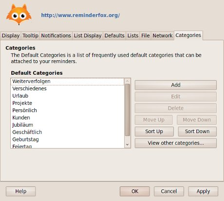

User Guide - Options and Preferences
To bring up the ReminderFox Options dialog, right-click on the ribbon in the status bar and select 'Options...'. Alternatively, from the Tools menu, select 'ReminderFox'->'Options...'
Display

The Display tab allows you to change display options
- Display today's reminders in status bar - uncheck this if you don't want to show the text of today's reminders in the status bar.
- Show reminders for the next X upcoming days - the number of days to look ahead and report on upcoming reminders for alerts and tooltips. (default: 15)
- On double-click of status icon, edit... - Sets the action when double-clicking the reminder status icon. The default is to open up the Edit Reminders dialog. You can change this to open up to the ToDos tab instead.
- Display Placement - Change this to modify where you want the ribbon status icon to be displayed (the status bar, the menu bar, etc).
You can also change the position that the icon resides:
- Always Last - the icon will appear in the last position of the display bar you selected
- Specific Position - you can set a specific position number; the icon will appear on the display bar at that position.
Tooltip

The Tooltip tab allows you to change what the the tooltip displays.
- Display reminders in tooltip - if this is checked, current and upcoming reminders will show in the reminder icon tooltip
- Display ToDo's in tooltip - if this is checked, ToDo's (that are marked to show in the tooltip) will show in the reminder icon tooltip
- Labels- You can customize the tooltip labels for Today's and Upcoming Reminders. Click on the Customize button for a list of available variables that will show the information in your tooltip. For instance, this label:
[shortDay] [shortMonth] [date]: [reminderDesc] ([time])will result in:
Tue Jun 21: Meeting with Johnson (2:30pm)
You can also see the number of days left until the reminder occurs by using the [daysUntil] variable.
For example:
[shortDay] [shortMonth] [date]: [reminderDesc] ([time]) -- in [daysUntil] days
will result in:
Thu Jun 23: Timmy's Birthday -- in 4 days
(Note: at minimum, you must leave a space or a character between each variable, as two consecutive variables will not be properly parsed.)
Notifications

The Notifications tab allows you to change the alert and notification options. The Show Alert Slider checkbox toggles whether the alerts are enabled or not.
- Show Alert Every X minutes - This is the number of minutes between alerts (default: 120)
- Display - controls what the alerts show.
- Show today's and upcoming reminders - show alerts for current and upcoming reminders
- Show only today's reminders - only show alerts when there is a reminder occurring today
- Show only upcoming reminders - only show alerts for upcoming reminders
- Sounds -You can elect to play sounds when the alarm and alert slider shows up. You can use your default OS alert sound, or supply a custom .wav file.
List Display

The List Display tab controls the display options of the Reminder List.
Defaults

The Defaults tab allows you to select the options that are set by default when creating new reminders. It also allows you to set the default preference to show or hide completed items in the list by default. This option can be temporarily overrode when viewing reminders via the Show/Hide Completed Items option in the List window's context menu.
Lists

The Lists tab allows you to add and manage custom lists. These custom lists show up as separate tabs. For more details, see the Custom Lists section.
File

The File tab allows you to set the location of your reminder file, as well as importing and exporting. For details, go to the Importing and Exporting section.
Network

The Network tab allows you to set up your networking options. View Sharing reminders with other computers via the network for details.
Categories
Categories are used to classify Reminders or ToDo's. If you are familiar with tags, categories are very similar.

Categories are separated into tow groups, 'Default' and 'Other'.
- Default Categories - A list of frequently used categories, provided by default.
- Other Categories - The list of categories that are currently present in your list of Reminders/ToDo's, that do not belong to the Default Categories. You may move these categories to the Default list by clicking 'View other categories'.
{kind=link}
{kind=link}
{kind=link}
{kind=link}